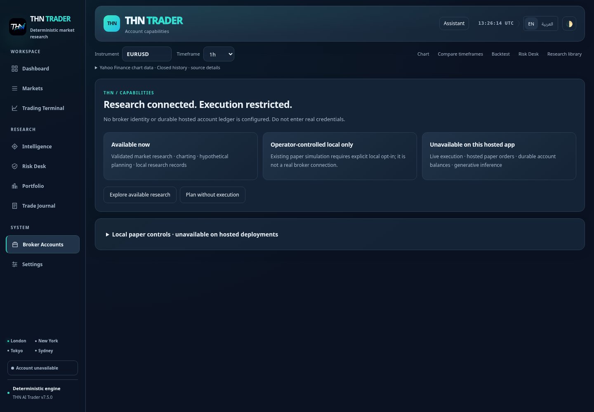
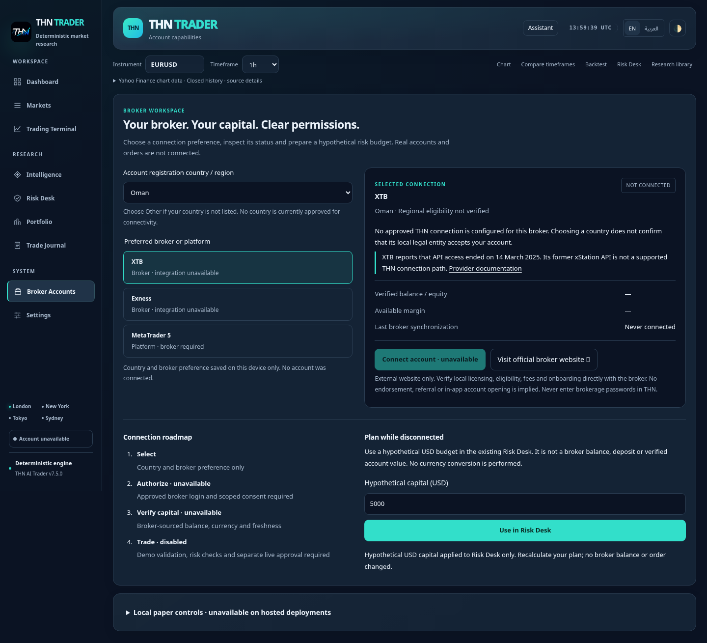
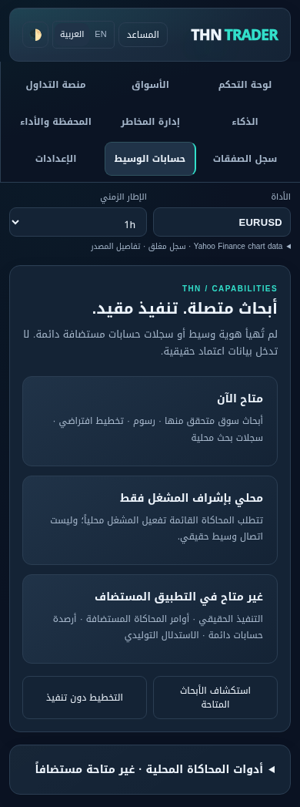
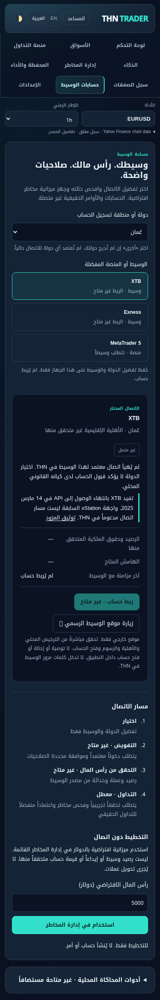

Native screenshots from packaged local application, offline market fixtures. No real broker connected. Before is released bca80e1, not a live Production browser capture. Mobile images use matched 390px viewports; desktop 1440px.



